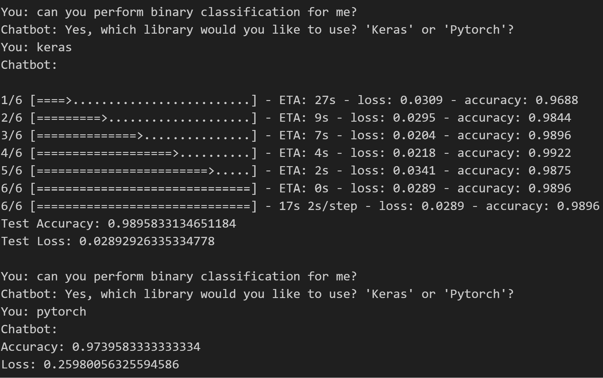
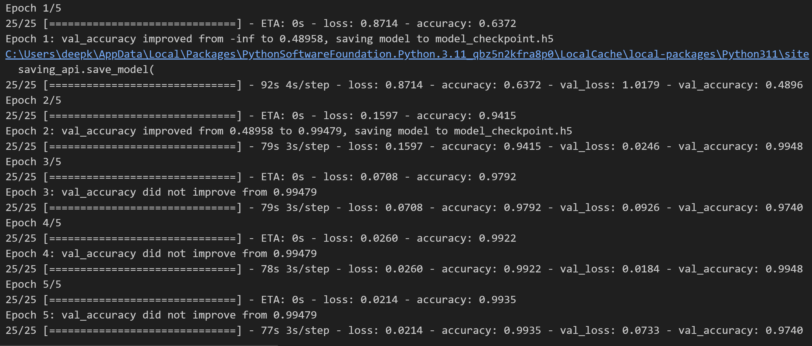
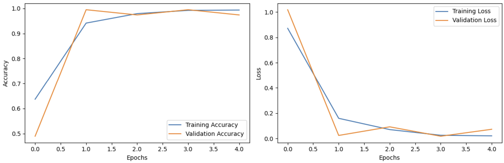
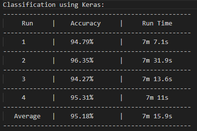
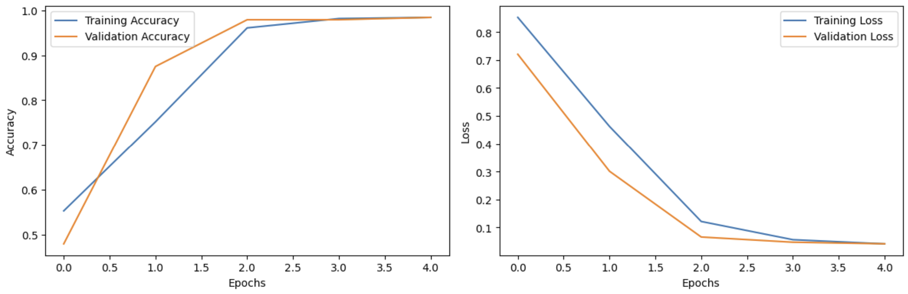
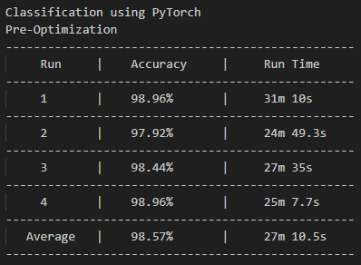
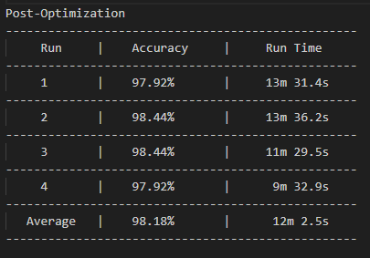
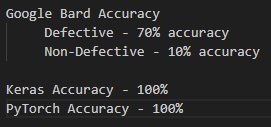

#Artificial Intelligence Project
Overview
This is a project I completed in my Artificial Intelligence class. Over the course of the semester, I learned about the logistics of AI and was to use that knowledge to create a model that would use machine learning/AI to solve an issue that I was to come up with.
The problem that I chose was to look at how effectively machine learning could be used in quality control in the manufacturing industry. To tackle this problem, I acquired a dataset online which consisted of images of defective and non-defective potato chips. These images were split into Train and Test directories and further into Defective and Non-Defective subdirectories. Using this dataset, I was able to create a model that implemented binary classification using the PyTorch and Keras libraries.
Below are the results of my research.
Learning Outcomes
- Machine Learning and Artificial Intelligence concepts
- The use of convolutional neural networks
- How to implement binary classification
- How to perform data analysis using images
- How to train and test a model
- Generating data visualizations of test results
- How to develop a basic chatbot
- The use of Keras and PyTorch libraries
Chatbot
Chatbot is rule-based and can be found here. This example shows how to run the model with both libraries in the chatbot, random chitchat has also been implemented. Click the images to enlarge.

Keras
Model checkpoints were used to save the model to mitigate retraining and save time when called in the chatbot. The epoch with the best accuracy is saved to the checkpoint file.



PyTorch


After fixing an error where the model was being evaluated twice during training, my model improved in runtime but showed no significant change in accuracy.

Comparison with Google Bard
The first 10 images from the Test/Defective and Test/Nondefective directories were used. The query "Is this chip defective?" was used.

Conclusive Remarks
As a result of my research, I found that using the PyTorch library returns a higher accuracy of about 3%, but with a slower runtime of about 5 minutes. So in conclusion, it would be in a manufacturer's best interest to utilize the PyTorch library when using AI for quality control since accuracy is the most important factor. However, if runtime is an issue, then performing the classification using Keras would be the better option.